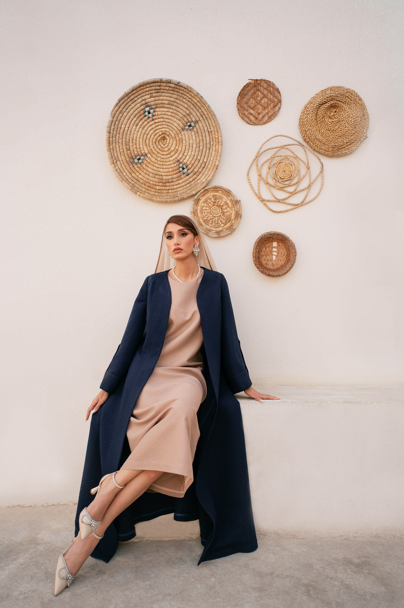

عرّفنا عليك
طلب مختصر يوضح العمر، المدينة، الحالة الاجتماعية، نوع الزواج والتفضيلات الأساسية.
عهد خدمة خاصة للتوفيق للزواج الجاد، تجمع بين الاكتشاف الرقمي والمراجعة البشرية والترشيح بعناية — مع احترام القيم، الخصوصية، وموافقة الطرفين.

عهد ليست تطبيق تمرير عشوائي. نبدأ بفهم الشخص، نمط حياته، ظروفه، وما يبحث عنه فعلًا؛ ثم نرتب رحلة أكثر هدوءًا واحترامًا باتجاه الزواج والاستقرار.
طلب مختصر يوضح العمر، المدينة، الحالة الاجتماعية، نوع الزواج والتفضيلات الأساسية.
تراجع الخطّابة الطلب، مستوى الجدية والتوافق، ثم تُعرض الترشيحات المناسبة وفق الخصوصية.
عند القبول المتبادل يبدأ تعارف محترم، ثم ينتقل الجادون إلى الأسرة أو الخطوات الرسمية والعقد.
بدل البحث العشوائي، تبدأ عهد بفهم ظروفك وتفضيلاتك والاستعداد الحقيقي للزواج، ثم تركّز على ترشيحات أقرب لما يناسبك.
لا تُنشر ملفات النساء أو وسائل التواصل للعامة. التقديم والمراجعة والترشيح تتم بمراحل واضحة، مع استقلال قرار القبول لكل طرف.
لا نطلب هوية وطنية أو معلومات بنكية في نموذج البداية.
الصور والبيانات الخاصة ليست معرضًا مفتوحًا للمتصفحين.
الانتقال بين المراحل يتم بوضوح وموافقة مستقلة من الطرفين.
تستقبل عهد طلبات الزواج الرسمي والمسيار للبالغين، مع مراعاة الضوابط الشرعية والمتطلبات النظامية المطبقة على كل حالة. عهد لا تضمن إتمام الزواج ولا تقدم استشارة شرعية أو قانونية.
مسار نحو التعارف الجاد ثم الانتقال إلى الأسرة والإجراءات الرسمية عند توافق الطرفين.
يُتعامل معه كمسار زواج جاد حيث يكون مناسبًا ومستوفيًا للمتطلبات ذات الصلة، وليس كعلاقة عابرة.
لا. فلسفة عهد قائمة على الحد من العرض العام للبيانات الحساسة، ومشاركة ما يلزم فقط بحسب المرحلة والموافقة.
لا. التقديم والترشيح لا يعنيان ضمان الزواج؛ القرار النهائي مستقل لكل طرف ويعتمد على التوافق والقبول.
نعم، يمكن تحديد المسار المطلوب في الطلب، مع مراعاة الضوابط الشرعية والنظامية المطبقة.
لا. يمكنك إرسال الطلب الأولي مباشرة، ثم تتواصل معك عهد عند اجتياز مرحلة المراجعة المناسبة.
نموذج أولي مختصر. لا ترسل هوية وطنية أو بيانات مالية أو صورًا خاصة في هذه المرحلة.